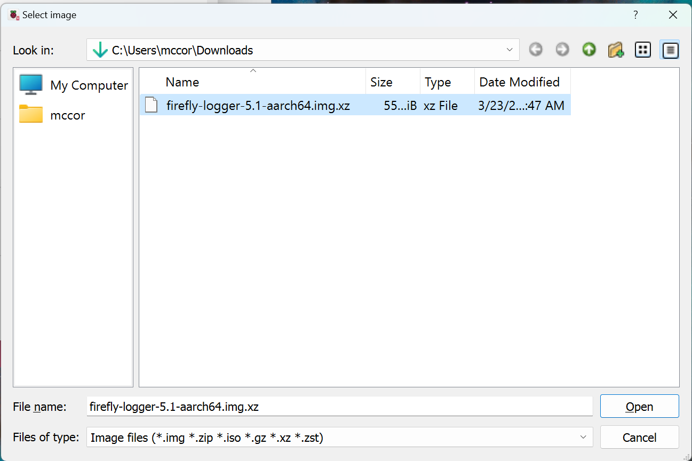
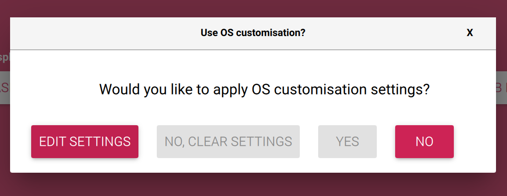
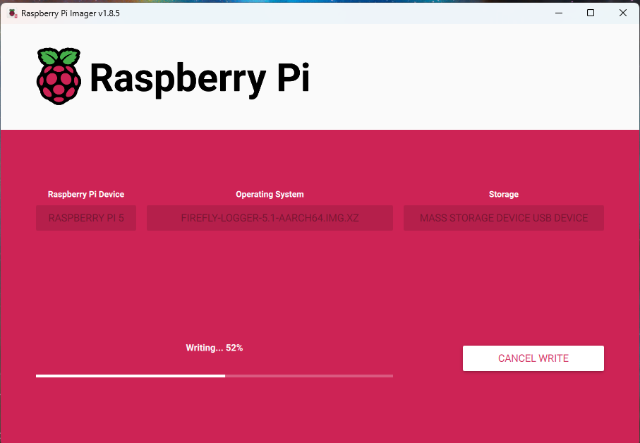

Step-by-Step Pi Appliance Setup
-
If you do not already have it installed, install the Raspberry Pi Imager.
-
FIX FIXIMG Download the latest release image. This will be named
firefly-logger-X.Y-aarch64.img.xzwhere "X.Y" is the version. Save it to the localDownloadsdirectory. -
Launch Raspberry Pi Imager from the start menu.

-
Click on CHOOSE DEVICE and choose the type of Pi hardware on which Firefly Logger is being installed.

-
Click on CHOOSE OS. Scroll to the bottom of the list that appears and select Use custom.

-
FIX FIXIMG A Select image dialog box will appear. Navigate to the
Downloadsfolder and select the image downloaded in step 2. It will be named something like firefly-logger-5.1-aarch64.img.xz. Then click Open.  -
Connect the SD card or the SD card in a USB adapter to the computer. Then click on CHOOSE STORAGE. An option will be presented named something such as "Mass Storage Device USB Device - 16.0 GB". Click on that entry.

-
Click NEXT
-
A box labelled "Use OS customisation?" will appear. Click on EDIT SETTINGS 
-
FIX FIXIMG Check the box next to Configure wireless LAN and then enter the name of the wireless network in SSID and the password for that network in Password. Change the "Wireless LAN country" to US or other country as appropriate. This is not necessary if the Pi will use a network cable rather than wireless.

-
(Optional) Check the box next to Set locale settings and change the "Time zone" to the desired region.
-
Click SAVE in "OS Customsation".
-
Click YES for "Use OS customisation?"
-
FIXIMG Click YES to continue to write the image to the SD card. 
-
Depending on the speed of the computer and the type of SD card one will have time for a beverage of their choice. When the write is complete, remove the card from computer and insert it into the Pi. If using a USB adapter for the SD card, remove the SD card from the adapter and insert the card into the Pi. The Pi will not us the SD card in the USB adapter.
-
Power on the Pi. Wait approximately 2 minutes for the Pi to boot and perform the various firstboot tasks.
-
FIX FIXIMG (Optional) Network connectivity may be tested using the command
ping -4 firefly.localfrom a command prompt or PowerShell window.